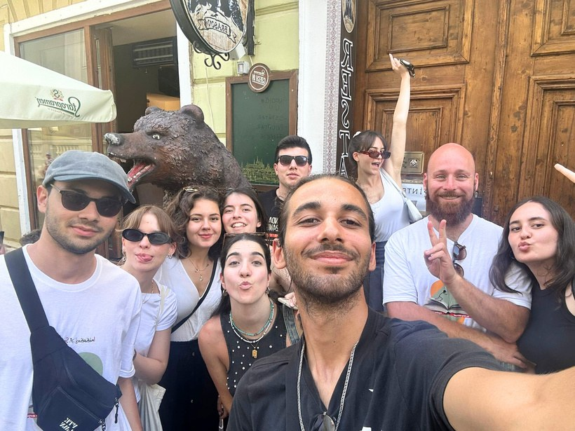
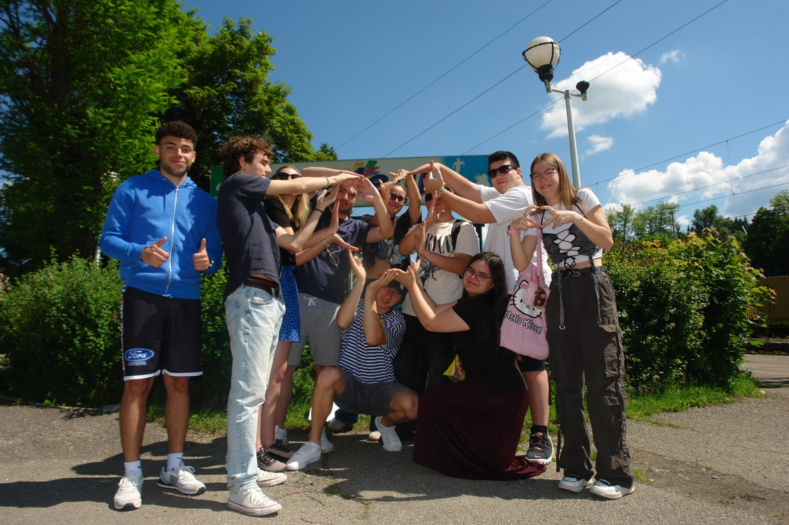
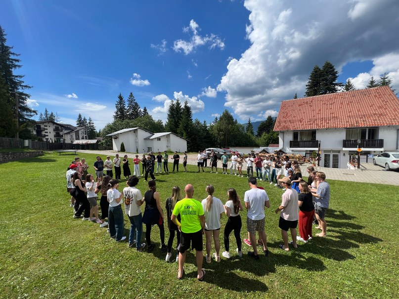

InnoVenture · pregătirea tinerilor pentru tranziția către piața muncii
You(th) on the Labour Market
Tinerii pe piața muncii
Pregătire pentru lumea reală: tinerii și-au descoperit punctele forte și au învățat să se prezinte cu încredere pe piața muncii.



IUN 2024InnoVenture
Descriere
În primul an, prin InnoVenture, activitatea Tinerii pe piața muncii a sprijinit pregătirea pentru tranziția către piața muncii, dezvoltarea încrederii, comunicării și capacității de auto-prezentare.
Participanții au dezvoltat comunicarea, lucrul în echipă, gândirea critică, reflecția, încrederea în sine, inițiativa, adaptabilitatea, colaborarea interculturală și capacitatea de a-și planifica mai conștient viitorul educațional și profesional.
- Perioada
- 6–16 iunie 2024
- Loc
- Predeal, România
- Tematică
- Piața muncii, comunicare, auto-prezentare
- Cadru
- Acreditarea Erasmus+ AIS
- Etapă
- Anul 1
- Program
- InnoVenture
- Proiect Erasmus+
- 2023-1-RO01-KA151-YOU-000131090
IUN 2024Din fișa proiectului
Developing Employability Skills and Empowering Young People
persoane
țări
tineri participanți
tineri cu oportunități reduse
În perioada 6–16 iunie 2024, Asociația Inițiative Sociale (AIS) a organizat la Predeal, România, schimbul internațional de tineri „InnoVenture: You(th) on the Labour Market” (A2), a doua mobilitate implementată în cadrul acreditării Erasmus+ în domeniul tineretului (2022-1-RO01-KA150-YOU-000110034), prin proiectul 2023-1-RO01-KA151-YOU-000131090.
Mobilitatea a reunit 56 de persoane din 9 țări (Bulgaria, Cehia, Grecia, Italia, Polonia, Portugalia, România, Spania și Turcia), dintre care 45 de tineri cu vârste între 18 și 30 de ani, 9 lideri de grup și 2 facilitatori. Incluziunea a reprezentat o componentă importantă, prin participarea a 19 tineri cu oportunități reduse (42,2% din totalul tinerilor participanți), cărora proiectul le-a facilitat accesul la oportunități internaționale de învățare și dezvoltare profesională.
Scopul principal al mobilității a fost dezvoltarea competențelor de angajabilitate și îmbunătățirea capacității tinerilor de a accesa oportunități profesionale și de a deveni activi pe piața muncii. Proiectul a urmărit dezvoltarea abilităților necesare procesului de recrutare, stimularea încrederii în sine, încurajarea inițiativei personale și consolidarea cooperării interculturale.
Pe parcursul celor 9 zile de activități educaționale, participanții au fost implicați într-un program intensiv de educație non-formală, bazat pe workshopuri, simulări, brainstorming, dezbateri, jocuri de rol, studii de caz, lucru în echipe multiculturale, reflecții și evaluări participative.
Activitățile au inclus sesiuni de team-building și incluziune, prezentări privind situația tinerilor pe piața muncii în cele nouă țări, workshopuri de autocunoaștere și orientare profesională, precum și exerciții practice de pregătire pentru angajare.
Prin utilizarea unor instrumente precum analiza SWOT, diagrama IKIGAI și testul de orientare profesională RIASEC, participanții și-au analizat competențele, interesele, punctele forte și aspirațiile profesionale, identificând oportunități de dezvoltare adaptate propriului profil.
Un accent deosebit a fost pus pe workshopurile dedicate redactării CV-ului Europass, scrisorii de motivație, pregătirii pentru interviul de angajare și dezvoltării brandului personal.
Una dintre activitățile centrale a fost „Job Fair”, o simulare complexă a unui târg de cariere, în cadrul căreia tinerii au experimentat atât rolul angajatorului, cât și pe cel al candidatului. Aceștia au pregătit documente de candidatură, au participat la interviuri simulate și au primit feedback privind modul de prezentare și valorificare a competențelor.
Programul a inclus și o vizită de studiu în zona Bran–Brașov, unde participanții au explorat oportunități economice locale și au interacționat cu tineri angajați, precum și activități interculturale, workshopuri digitale și sesiuni dedicate programului Erasmus+ și instrumentului Youthpass.
A2 a generat rezultate educaționale și materiale concrete, dezvoltate prin implicarea directă a participanților:
- 9 studii de caz și prezentări naționale privind șomajul în rândul tinerilor, provocările angajabilității și oportunitățile profesionale din țările participante;
- 45 de tineri implicați în activități practice de pregătire a CV-urilor Europass, scrisorilor de motivație și documentelor necesare procesului de recrutare;
- 1 simulare complexă de tip Job Fair, care a inclus aplicarea pentru posturi fictive, interviuri și evaluarea candidaților;
- 7 videoclipuri tematice, realizate de echipe multiculturale pentru evidențierea provocărilor întâmpinate de tineri în procesul de angajare și la locul de muncă;
- 1 broșură de proiect și 1 blog dedicat mobilității;
- 9 rapoarte naționale de diseminare, însoțite de materiale foto-video, articole, prezentări și testimoniale.
Prin aceste activități, participanții și-au dezvoltat competențele de comunicare, prezentare publică, autocunoaștere, orientare profesională, leadership, lucru în echipă, gândire critică, adaptabilitate și rezolvare a problemelor.
Totodată, au dobândit cunoștințe practice privind identificarea oportunităților de angajare, utilizarea instrumentelor Europass, pregătirea candidaturilor și participarea la interviuri.
Activitățile interculturale și realizarea materialelor digitale au contribuit la îmbunătățirea competențelor lingvistice, digitale și sociale. Procesul de învățare a fost monitorizat prin reflecții zilnice și evaluări, iar competențele dobândite au fost recunoscute prin instrumentul Youthpass.
Mobilitatea a fost coordonată de AIS, în colaborare cu cele 8 organizații internaționale partenere, printr-un sistem structurat de planificare, monitorizare și evaluare.
Pregătirea a inclus selecția participanților, încheierea acordurilor de parteneriat, elaborarea programului educațional, organizarea transportului și cazării la Complexul Holiday Panoramic din Predeal, precum și pregătirea materialelor informative și educaționale.
Managementul a fost susținut prin instrumente digitale precum Google Drive, WhatsApp, Facebook și platforme de colaborare online. Întâlnirile cu liderii de grup, reflecțiile zilnice, evaluarea intermediară și cea finală au permis monitorizarea progresului, identificarea dificultăților și adaptarea activităților.
O atenție specială a fost acordată incluziunii tinerilor cu oportunități reduse, participării active, siguranței și promovării practicilor responsabile față de mediu.
Rezultatele evaluării post-mobilitate, bazate pe 53 de chestionare completate, au evidențiat un nivel ridicat de satisfacție și contribuții pozitive asupra dezvoltării personale și profesionale.
Nivelul de satisfacție și evaluarea competențelor (scală de la 1 la 4 puncte, unde 4 reprezintă punctajul maxim):
- Satisfacția generală: 3,87 din 4 puncte, reflectând un nivel foarte ridicat de apreciere a experienței Erasmus+.
- Contribuția la dezvoltarea personală: 3,70 din 4 puncte, evidențiind efectele pozitive asupra încrederii în sine și dezvoltării personale.
- Dezvoltarea capacității de lucru în echipe multiculturale: 3,74 din 4 puncte.
- Utilitatea workshopurilor de redactare CV și scrisoare de motivație: 3,53 din 4 puncte.
- Utilitatea sesiunilor de pregătire pentru interviul de angajare: 3,60 din 4 puncte.
- Contribuția activităților de angajabilitate la dezvoltarea competențelor profesionale: 3,57 din 4 puncte.
- Utilitatea testului de orientare profesională: 3,55 din 4 puncte.
Schimbări pozitive și competențe dobândite (53 de respondenți):
- 92,5% dintre respondenți (49 din 53) au identificat schimbări personale pozitive în urma participării la proiect.
- 92,5% dintre respondenți (49 din 53) au confirmat că materialele educaționale au contribuit la dezvoltarea competențelor în domeniul angajabilității.
- 100% dintre respondenți (53 din 53) au considerat că proiectul a stimulat sentimentul de comunitate și colaborarea dintre participanți.
- 100% dintre respondenți (53 din 53) și-au exprimat interesul pentru participarea la proiecte similare în viitor.
- 94,3% dintre respondenți (50 din 53) au confirmat fără echivoc că s-au simțit sprijiniți de organizația gazdă.
Unul dintre cele mai relevante rezultate ale A2 a fost transferul competențelor dobândite în cadrul mobilității către parcursul profesional al participanților.
În urma evaluării post-mobilitate, 16 dintre cei 53 de respondenți (30,2%) au declarat că au obținut un loc de muncă după participarea la proiect.
Acest rezultat reprezintă un indicator concret al evoluției profesionale raportate de participanți. Deși angajarea poate fi influențată de mai mulți factori, rezultatul evidențiază relevanța competențelor de angajabilitate abordate în cadrul mobilității.
În privința aplicării la locuri de muncă și participării la interviuri reale după mobilitate, datele disponibile nu permit încă stabilirea numărului exact de persoane. Aceste rezultate trebuie diferențiate de candidaturile și interviurile simulate în cadrul activității educaționale „Job Fair”.
Prin pregătirea CV-urilor și scrisorilor de motivație, identificarea oportunităților profesionale, participarea la simulări de interviuri și dezvoltarea competențelor de self-branding, proiectul a oferit tinerilor instrumente practice pentru a aborda cu mai multă încredere procesele reale de recrutare.
Feedbackul liderilor de grup a confirmat relevanța activităților pentru dezvoltarea profesională a participanților. Conform raportării finale Erasmus+, 9 din 9 lideri au declarat că sunt „Very satisfied” cu experiența mobilității.
Totodată, toți cei nouă lideri au apreciat că participanții și-au clarificat aspirațiile profesionale și că perspectivele acestora de angajare s-au îmbunătățit, iar șapte lideri au considerat că tinerii sunt mai pregătiți pentru continuarea educației sau formării profesionale.
Evaluarea celor 8 organizații partenere a confirmat calitatea managementului și colaborării, fiind înregistrate scoruri de 5 din 5 puncte pentru comunicarea cu partenerii, 4,88 din 5 puncte pentru colaborarea dintre organizații și 5 din 5 puncte pentru îndeplinirea obiectivelor proiectului.
Mobilitatea a contribuit și la dezvoltarea capacității organizaționale AIS și la extinderea rețelei internaționale prin includerea a 3 noi organizații partenere: New Society din Bulgaria, Mladoevropani din Cehia și Hawk Stars din Portugalia.
Rezultatele proiectului au fost promovate prin intermediul blogului dedicat, al rețelelor sociale, materialelor educaționale și evenimentelor de informare organizate de participanți și organizațiile partenere.
Pentru A2 au fost raportate 7 sesiuni de diseminare și informare, însumând 163 de participări, desfășurate în România, Cehia, Italia, Polonia, Portugalia și Spania. Acestea au inclus prezentări despre oportunitățile Erasmus+, workshopuri de orientare profesională și demonstrații practice privind utilizarea Europass.
Activitățile au fost completate de campanii de promovare online și materiale realizate de participanți din cele nouă țări, prin intermediul Facebook, Instagram, LinkedIn, TikTok și al platformelor organizațiilor partenere.
Blogul A2 a înregistrat 1.521 de vizitatori la momentul raportării finale din 2024, contribuind la creșterea vizibilității proiectului și la promovarea oportunităților Erasmus+ și a educației non-formale.
Materialele realizate au fost puse la dispoziția publicului, facilitând accesul altor tineri și organizații la informațiile și resursele educaționale dezvoltate în cadrul proiectului.
„InnoVenture: You(th) on the Labour Market” a reprezentat o etapă importantă în implementarea acreditării Erasmus+ a Asociației Inițiative Sociale, contribuind la dezvoltarea competențelor de angajabilitate, promovarea incluziunii sociale, cooperării interculturale și consolidarea parteneriatelor internaționale.
Prin implicarea celor 56 de persoane din 9 țări, dezvoltarea competențelor practice ale celor 45 de tineri, realizarea materialelor educaționale și rezultatele pozitive ale evaluării, mobilitatea a demonstrat valoarea educației non-formale în pregătirea tinerilor pentru provocările pieței muncii.
Raportarea a 16 persoane care au obținut un loc de muncă după mobilitate reprezintă unul dintre cele mai importante rezultate post-proiect, evidențiind progresul profesional înregistrat de o parte dintre participanți.
Împreună cu prima mobilitate, „InnoVenture: You(th) in Business” (A1), dedicată antreprenoriatului, A2 a completat primul an de implementare a acreditării Erasmus+ printr-o abordare integrată a dezvoltării competențelor pentru viața profesională.
Experiența dobândită a reprezentat o bază pentru dezvoltarea următoarelor activități AIS dedicate antreprenoriatului, angajabilității, incluziunii și participării active a tinerilor.
The story continues! Together we are stronger!